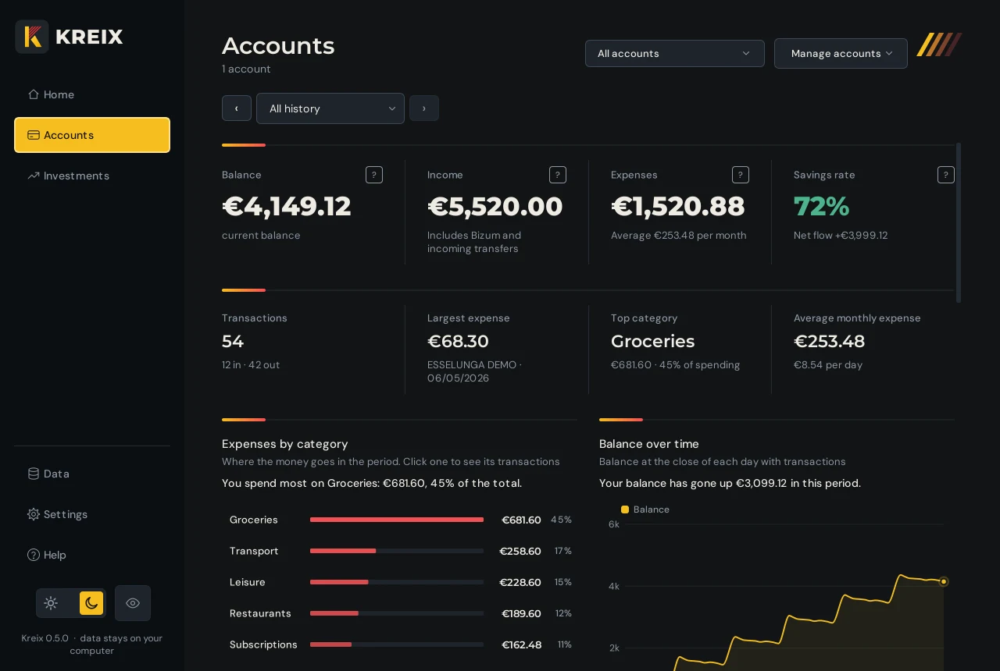
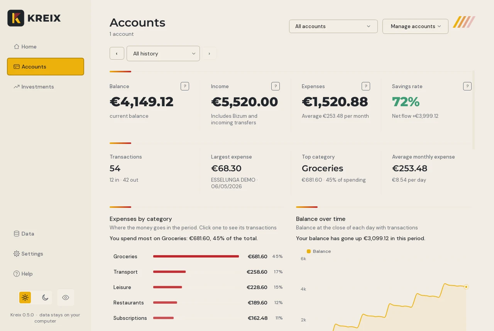
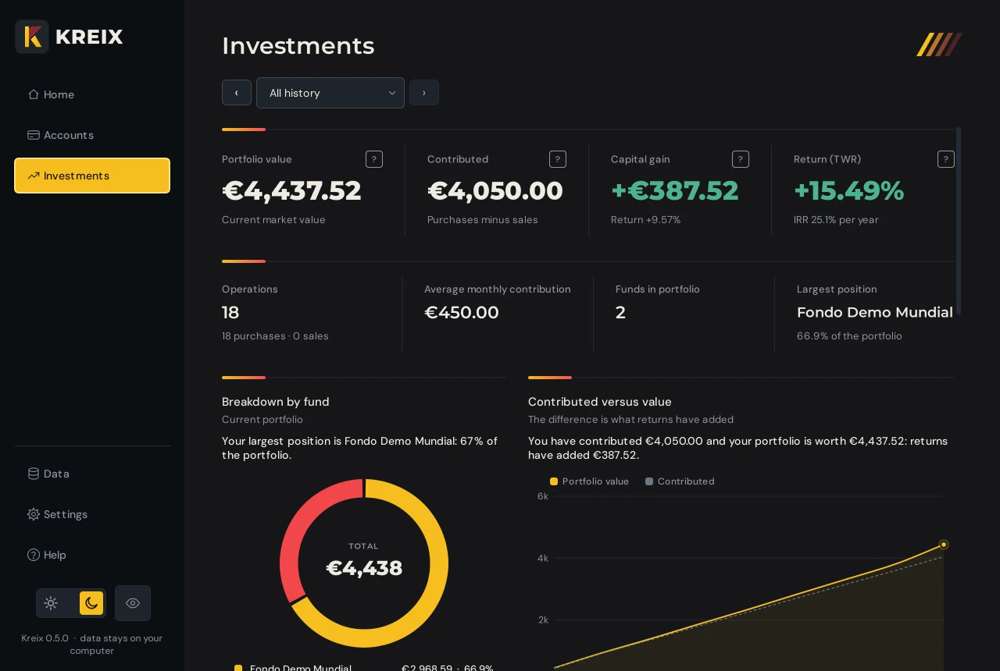
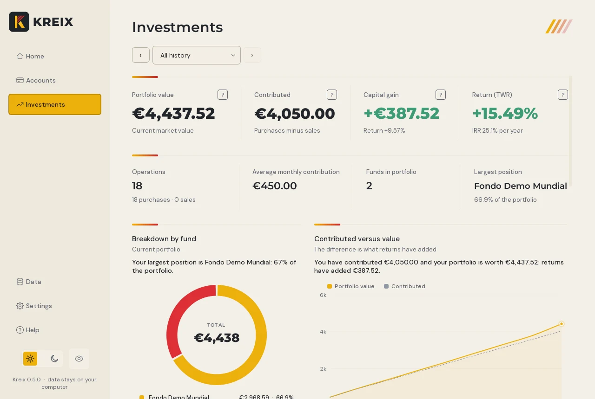
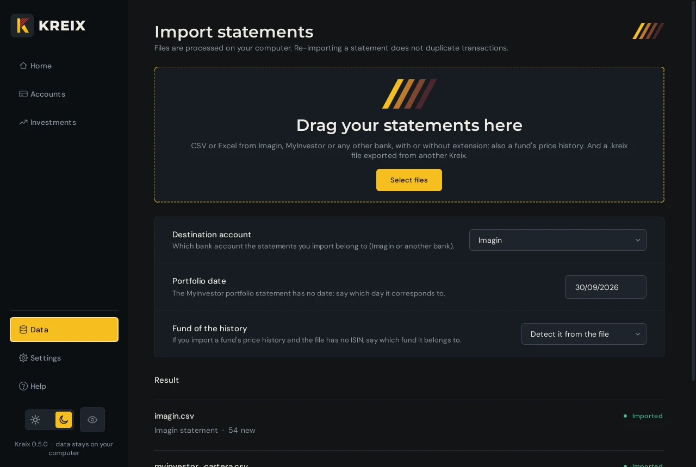
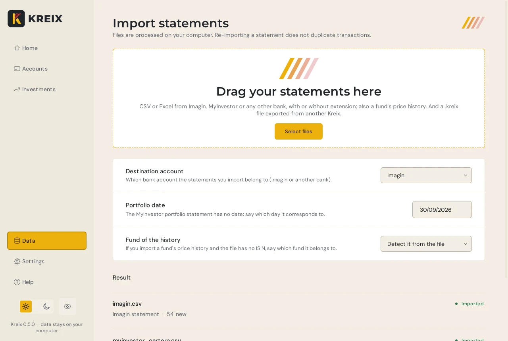
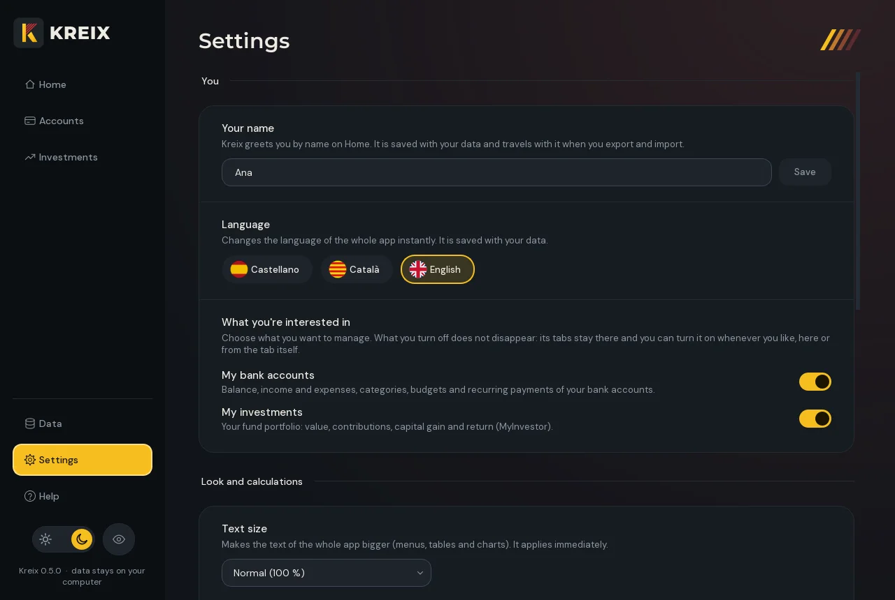
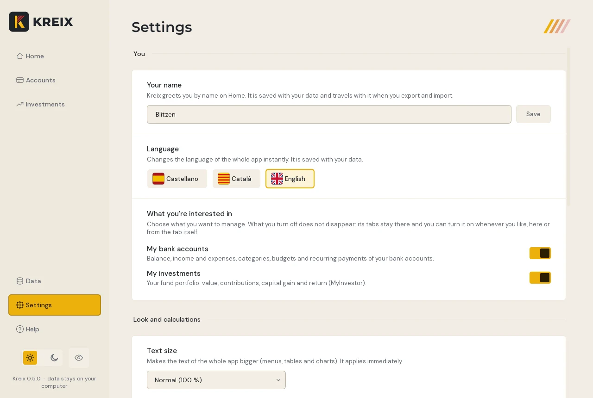

Kreix never asks for your bank login details.
The personal finance app for Windows and your phone that does not watch you: it works offline and keeps everything encrypted on your device.
Version 0.6.1 for Windows 10 and 11 (64-bit). If Windows warns you when you open it, that is because the installer is not signed yet: click “More info” and then “Run anyway”.
On the computer, Kreix is a Windows program: open this page there to download it. Download anyway (38 MB)
No bank login details
You download the statement and drop it into Kreix. Kreix never logs in to your bank and never stores your login details.
100% offline
It never sends your data anywhere. The Windows program does not connect to the internet, not even to update itself; the phone app only does to download itself from this website. No account, no cloud, no ads and no telemetry.
Your data, encrypted
Everything Kreix stores is encrypted with your master password. Without it, nobody can read it, not even us. Exports can be encrypted too.
Trailer: how Kreix works


- How Kreix works, in one minute.
- Download your bank statement, as CSV or Excel.
- Drop it into Kreix. You see what it read before anything is saved.
- Home sums it up: net worth, savings this month and end-of-month forecast.
- Accounts and Investments give the detail: what you spend on and how your portfolio is doing.
- If someone looks over your shoulder, one click blurs the amounts.
- And on your phone, the same app: send it your data with a QR code, no cables and no connection.
- No bank login details, no connection, everything encrypted.
- Kreix, for Windows and for your phone.
Why Kreix
Four design decisions, and none of them is negotiable.
It never watches you
No account, no cloud and no telemetry. Nobody knows how much you earn or what you spend it on, not even us. Check it yourself: it works the same without internet.
Security with no shortcuts
Everything it stores is encrypted with your master password. It is decrypted only in memory, locks itself when you are not using it and, without your password, there is no way to open it.
Your money, in plain sight
Net worth, savings this month, end-of-month forecast, budgets, recurring payments and investments. Home sums it all up on a single screen.
Easy from the first minute
You drop your bank statement in and that is it. No linking accounts, nothing to set up. If your bank is not on the list, Kreix asks you once which column is which and remembers it.
Start in three steps
Without linking accounts or giving anyone access: just a file you can already download from your bank.
-
Download the statement
From your bank's website or app, as CSV or Excel. It is the same file you would download to keep.
-
Drop it into Kreix
Drag it onto Import. Kreix shows you what it read and saves nothing until you press Import. If you import the same statement again, Kreix does not duplicate transactions.
-
See your money
Home summarises your net worth, your savings this month and what is coming. Accounts and Investments give the detail.
The guide, screen by screen
Each tab in the sidebar, in a few words. The data in the screenshots is made up.
Everything important at a glance
- Your net worth, your return and this month's savings rate.
- A forecast of how much money you will have at the end of the month, counting your fixed payments.
- Upcoming payments, budgets and the transactions that have no category yet.
Your spending, made clear
- Spending by category and balance over time, for one month or the whole history.
- Change a transaction's category with a right click, or create your own rules.
- Budgets by category and detected recurring payments.


Your fund portfolio
- Portfolio value, amount contributed, gain and return.
- Breakdown by fund and growth compared with what you have contributed.
- It is built from the orders and the portfolio you export from MyInvestor.


Drop and review
- Drag your bank's CSV or Excel files onto the import area.
- You see what was read before saving, and almost everything can be undone.
- If Kreix does not recognise the file, it asks you which column is which and remembers it.


Your way
- Spanish, Catalan or English, switching instantly.
- Light or dark theme, text size and an animated sky on Home.
- Password, automatic lock and encrypted backups.


Kreix on your phone
The same app, adapted to your phone: the same figures, charts and explanations, with Blitzen and Black on Home. It installs from the browser, with no app store, and keeps everything encrypted on the phone.
-
Open it on your phone
Tap “Open Kreix on your phone” from the phone itself. The first time it downloads about 20 MB; after that it works offline.
-
Install it
On Android, with Chrome: the ⋮ menu and “Install app”. On iPhone, with Safari: the Share button and “Add to Home Screen”. It stays like any other app.
-
Bring your data
Import your statements from the phone or send it the ones on your computer: in Kreix for Windows, Data, Export and “Send to phone”, then scan the QR code with the app. No cables, no connection.
Your data stays encrypted on the phone with your master password. The app only connects to this website to download itself and, when there is a new version, to update. It also works in the browser on a Mac or a Linux computer.
An eye for when someone looks over your shoulder
With one click, or Ctrl+H, Kreix blurs every amount, in figures, tables and charts. You can tell there is a number, but not which one. Try it.
Automatic categories
Kreix sorts your spending by itself, and your rules take priority over its own.
Recurring payments
It detects subscriptions and bills, and tells you when the next one is due. You remove the ones you no longer pay.
Almost everything can be undone
Every important change shows a notice with an Undo button.
Your data never leaves your computer
You do not have to trust a promise: Kreix is built so that it has nothing to send and nowhere to send it.
-
No network
Kreix has no features that use the internet: it does not update itself, send data or track how you use it.
-
Real encryption
Your data is encrypted with AES and a key derived from your password (PBKDF2-SHA256 with 600,000 iterations). If anyone tampers with the file, it will no longer open.
-
Nothing unencrypted on disk
When you open Kreix, your data is decrypted only in memory. No unencrypted temporary files are written.
-
Only you hold the password
Nobody else has it. That is why, if you forget it, nothing can be recovered: you would have to start from scratch.
Check it yourself
- Disconnect Wi-Fi or the network cable.
- Open Kreix and use it as usual: import, look at your charts, change categories. Everything works the same, because it never needed a connection.
For extra assurance, create an outbound rule in Windows Firewall that blocks Kreix and check that it keeps working.
And the code is in plain sight: read it on GitHub.
Good to know
The file that Export creates (.kreix) can be encrypted with your password, but that is optional. If you do not encrypt it, keep it somewhere safe. And write down your master password somewhere safe: if you lose it, there is no way to recover your data.
Works with your bank
Kreix reads CSV and Excel (.xlsx and the older .xls). It recognises these formats by their usual columns.
- Imagin
- MyInvestor
- CaixaBank
- Santander
- Revolut
- Trade Republic
- Any other bank
If Kreix does not recognise a file, it shows you the first rows and asks which column is the date, the description and the amount. It remembers for next time. The CaixaBank, Santander, Revolut and Trade Republic formats are included but still being tested.
100% Offline
100% Encrypted
100% Private
On the computer, Kreix is a Windows program: open this page there to download it. Download anyway (38 MB)
Frequently asked questions
Does Kreix need my login details or access to my bank?
No, never. Kreix does not connect to your bank. It works with the statements you download yourself.
Does it connect to the internet?
No. It works exactly the same offline, and it has nothing to send information outside your computer.
Where is my data stored?
In an encrypted file inside your application data folder (on Windows, %APPDATA%\Kreix). It is only decrypted in memory while Kreix is open.
What happens if I forget the password?
It cannot be recovered: there is no spare key, which is why nobody else can read your data. You can start from scratch with a new password. Keep backups and write the password down somewhere safe.
What happens if I import the same statement twice?
Nothing: Kreix recognises the transactions it already has and does not duplicate them.
Can I take my data to another computer?
Yes. Export creates a .kreix file that you drop into Import on the other computer. You can encrypt it with your password. Importing it replaces any data that was there.
Can I undo a change?
Almost every important change shows a notice with an Undo button: imports, category changes, new rules, budgets and deletions.
Which languages is it available in?
Spanish, Catalan and English. You choose when you first open it and can change it at any time in Settings.
Does it work on Mac or on a phone?
On your phone, yes: Android and iPhone have the Kreix app, which installs from the browser (see “Kreix on your phone”). On a Mac or Linux you can use that same app in the browser. The program with an installer is Windows only.
How do I install it?
Download the installer and open it. It does not ask for administrator rights and it adds a shortcut to Start and to the desktop. Because the installer is not signed yet, Windows may warn you the first time: click “More info” and then “Run anyway”.